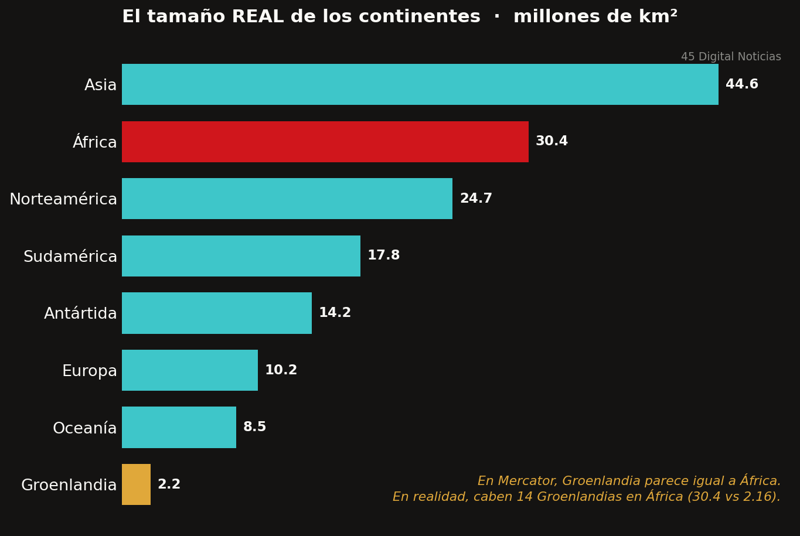
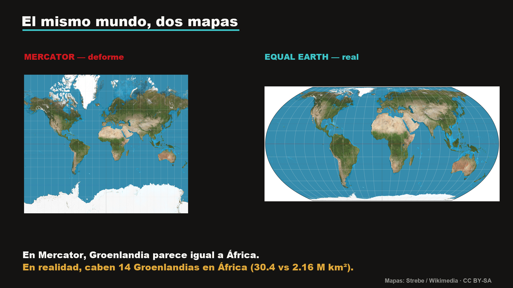
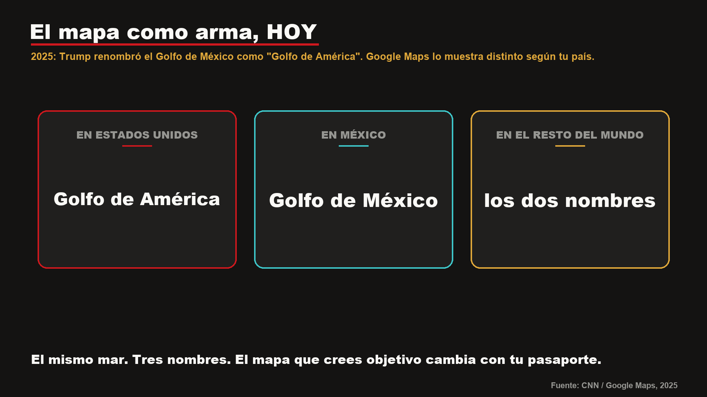

El mapa que ves está mal a propósito
El mapa del mundo con el que casi todos crecimos, la proyección de Mercator (1569), no es neutral: para permitir la navegación en línea recta, infla las tierras del norte y encoge las del ecuador. Groenlandia parece del tamaño de África, pero África es 14 veces mayor. Con la 'cartografía como poder' de J.B. Harley y 'How to Lie with Maps' de Mark Monmonier: todo mapa selecciona, exagera y omite. En 2025, tras el decreto de Trump, Google Maps mostró el Golfo de México como 'Golfo de América' a los usuarios de EE.UU., 'Golfo de México' en México y ambos en el resto: el mapa sigue siendo un arma. Y hoy el mapa más influyente es tu feed.

Pídale a cualquiera que dibuje de memoria el mapa del mundo y aparecerá casi siempre la misma imagen: Groenlandia enorme en la esquina superior, Rusia dominando el hemisferio norte, Europa en el centro y África, allá abajo, sorprendentemente pequeña. Esa imagen mental es tan común como equivocada. Y no lo es por descuido, sino por diseño.
El mapa que casi todos aprendimos es la proyección de Mercator, trazada por el cartógrafo flamenco Gerardus Mercator en 1569. Su propósito era práctico y específico: permitir que un marino dibujara una ruta de rumbo constante como una línea recta, algo invaluable para la navegación de la época. El precio de esa utilidad fue geométrico. Para que las líneas de rumbo quedaran rectas, la proyección estira las tierras cercanas a los polos y comprime las cercanas al ecuador. Mientras más lejos del ecuador, más se inflan.
Las consecuencias son visibles en cuanto uno las busca. En Mercator, Groenlandia parece tan grande como África; en la realidad, África es unas catorce veces mayor: 30.4 millones de kilómetros cuadrados frente a 2.16. Alaska aparenta ser más extensa que México, aunque México es mayor. Europa luce más grande que Sudamérica, cuando el subcontinente sudamericano casi la duplica. El error no es aleatorio: sigue un patrón. Lo que se agranda está al norte, Europa, Rusia, Canadá, Groenlandia; lo que se encoge está en el ecuador y al sur, África, América Latina. El mapa con el que el mundo se acostumbró a mirarse hace ver imponente al norte próspero y diminuto al sur empobrecido.

No hace falta atribuir mala fe a Mercator, que resolvía un problema náutico, para reconocer el fondo del asunto: ningún mapa es neutral. El geógrafo Mark Monmonier lo planteó sin eufemismos en el título de un libro ya clásico, "How to Lie with Maps" (1991). Todo mapa, sostiene, selecciona, generaliza, exagera y omite; no puede hacer otra cosa, porque representar una esfera en un plano obliga a decidir qué se conserva y qué se sacrifica. Antes que él, el historiador de la cartografía J.B. Harley había ido más lejos: los mapas no describen el territorio, lo argumentan; son documentos de poder que naturalizan una determinada forma de ver el mundo. Qué va al centro, qué queda en los márgenes, qué se dibuja grande, todo eso comunica jerarquías.
El mapa no describe el mundo: lo argumenta. Y esa elección tiene norte.
Existen alternativas que corrigen la distorsión de superficie. La proyección Gall-Peters, popularizada en los años setenta, reparte los tamaños con fidelidad a costa de estirar las formas. Más recientemente, la proyección Equal Earth, presentada en 2018, logra un equilibrio elegante: los continentes conservan sus proporciones reales sin que las siluetas resulten grotescas. En ella se aprecia, sin trucos, que África es el coloso que la geografía dice que es y que Groenlandia es una fracción de lo que la memoria escolar le atribuía.

Lo que vuelve a este tema algo más que una curiosidad de atlas es que la disputa por el mapa no terminó en el siglo XVI: se mudó a la pantalla, y sigue siendo un instrumento político dirigido contra alguien. El ejemplo más reciente y más cercano lo protagonizó México. En 2025, la administración de Donald Trump renombró por decreto el Golfo de México como "Golfo de América" y presionó para que los servicios de mapas lo adoptaran. La respuesta de Google Maps fue reveladora: a los usuarios en Estados Unidos les muestra "Golfo de América"; a los de México, "Golfo de México"; al resto del mundo, ambos nombres. El mismo cuerpo de agua, tres etiquetas distintas según la ubicación de quien mira. La presidenta Claudia Sheinbaum envió una carta a la empresa pidiendo revertir el cambio y, con ironía, sugirió que entonces Norteamérica bien podría llamarse "América Mexicana", recordando mapas antiguos. No es un caso aislado: Google también dibuja distinta la frontera de Cachemira según se consulte desde India o Pakistán, y lo mismo ocurre con Crimea. La empresa ajusta el territorio a la sensibilidad política de cada Estado. El mapa, otra vez, no describe: argumenta.

Hay todavía una cartografía más influyente y menos visible: la del algoritmo. El muro de una red social es una proyección de la realidad, y como toda proyección, decide qué se agranda y qué se encoge. Lo que maximiza la atención ocupa el centro y crece; lo que no engancha se comprime hasta desaparecer del campo visual. El usuario, como el escolar frente al Mercator, confunde esa proyección con el mundo entero. Es la misma operación de 1569 con otra herramienta: una superficie que parece mostrar la realidad tal cual es, cuando en verdad la ordena según los intereses de quien la dibuja.
Nada de esto obliga a tirar los mapas ni a desconfiar de toda representación; sin mapas no hay orientación posible. El punto es más modesto y más útil: recordar que entre el territorio y su imagen siempre hay una decisión, y que esa decisión tiene autor. La pregunta pertinente, frente a un planisferio o frente a un feed, es la misma que se haría un buen cartógrafo: qué se está agrandando, qué se está encogiendo, y a quién le conviene que lo veamos así.
SRVO
Fuentes y referencias citadas
- Britannica: "Why Does Greenland Look So Big on Some Maps?"
- Visual Capitalist: "The True Size of Greenland"
- CNN: "'Gulf of America' arrives on Google Maps" (el mismo golfo, distinto nombre según el país, 2025)
- Mark Monmonier, How to Lie with Maps, University of Chicago Press, 1991.
- J.B. Harley, "Deconstructing the Map", Cartographica, 1989.
- Proyección Equal Earth (Šavrič, Patterson y Jenny, 2018)
- Imagen del mapa: proyección Equal Earth. Strebe, Wikimedia Commons, CC BY-SA 4.0